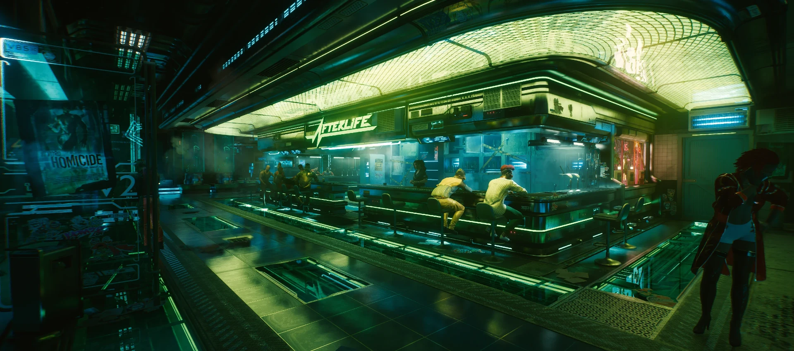

Top three places to visit at Night City


North Oak
Designed for the super rich: North Oak area, the one area in Night City
Afterlife
A club in Night City, known throughout the decades for its solo and merc clientele.
Badlands
A beautiful desert surrounds most of Night City.